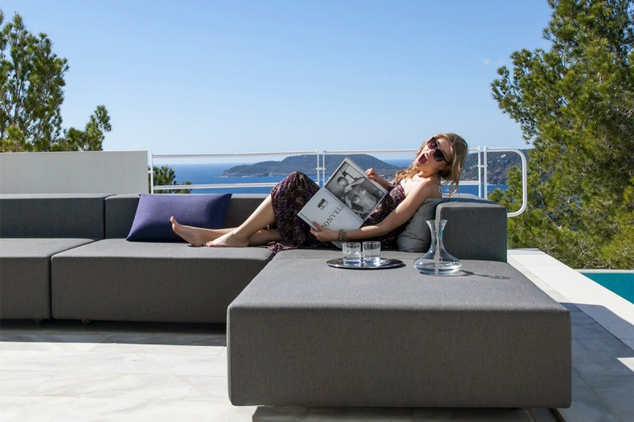
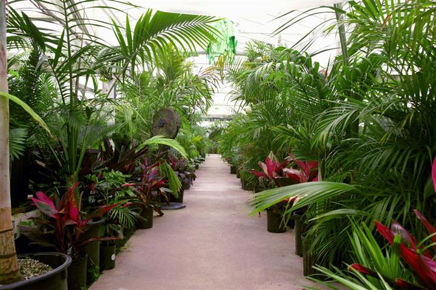

Products

Lucky Shrub is excited to announce the availability of our exclusive garden furniture collection! These pieces are made with high-quality materials and are designed to withstand the elements, so you can enjoy them for seasons to come. From comfortable lounge chairs to elegant dining sets, we have something for every outdoor space.
Plants

Welcome to our plant nursery! We are a one-stop shop for all of your gardening needs. Our selection of plants is second to none, with a wide variety of annuals, perennials, vegetables, herbs, and more. We also carry a range of pots, planters, and other gardening supplies to help you get your garden started. Our knowledgeable staff is always on hand to answer any questions you may have and to offer helpful tips and advice.
Meet us!

Meet Json and Maria, a dynamic duo with a passion for plants and garden design. Together, they have transformed countless outdoor spaces into lush, green oases. With a keen eye for aesthetics and a deep understanding of plant care, Json and Maria bring a fresh, creative approach to every project. Whether you're looking to create a peaceful retreat or a vibrant, colorful garden, they have the expertise to make it happen. Let Json and Maria help you bring your gardening dreams to life!